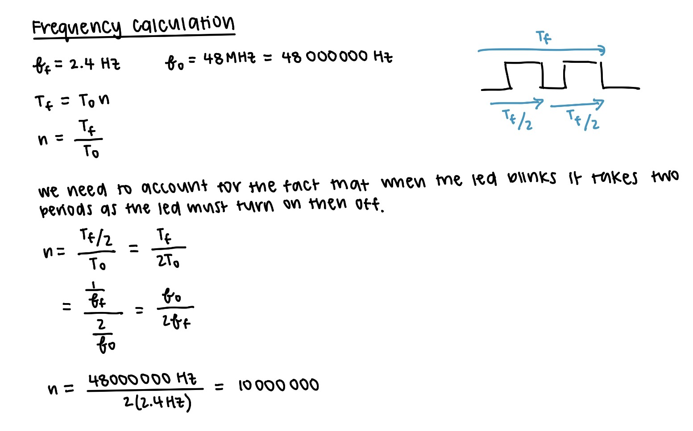
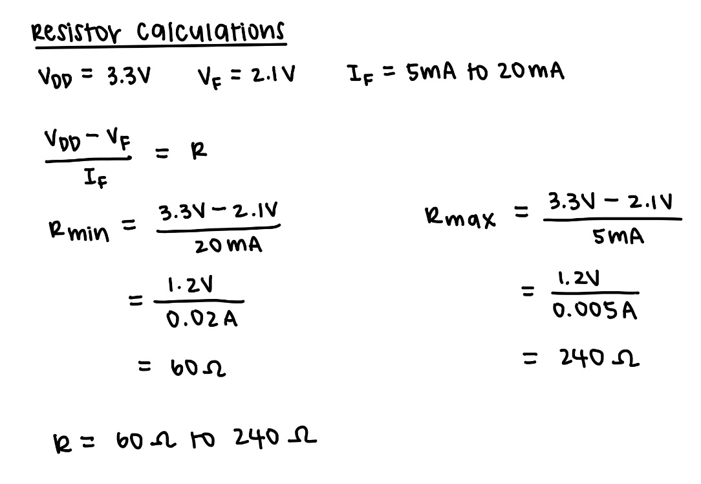
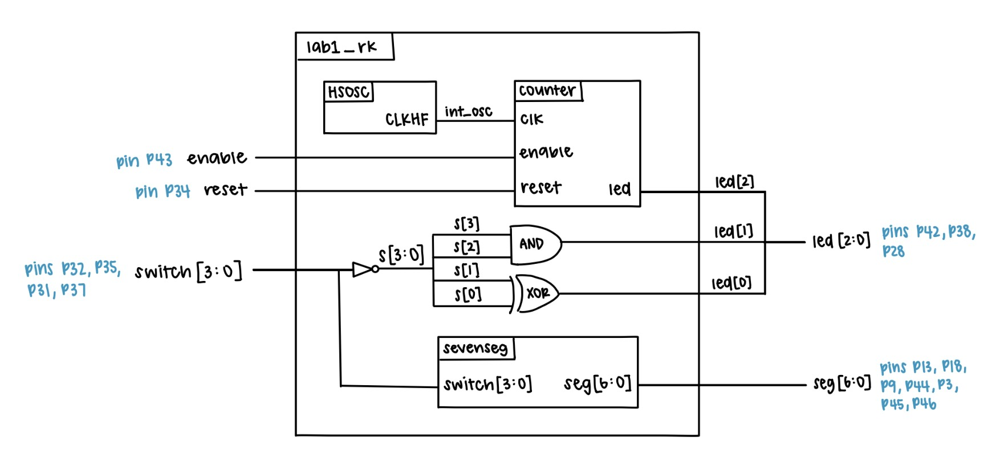
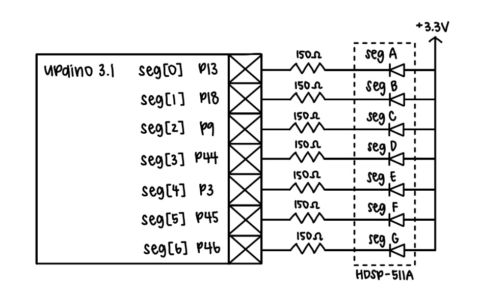
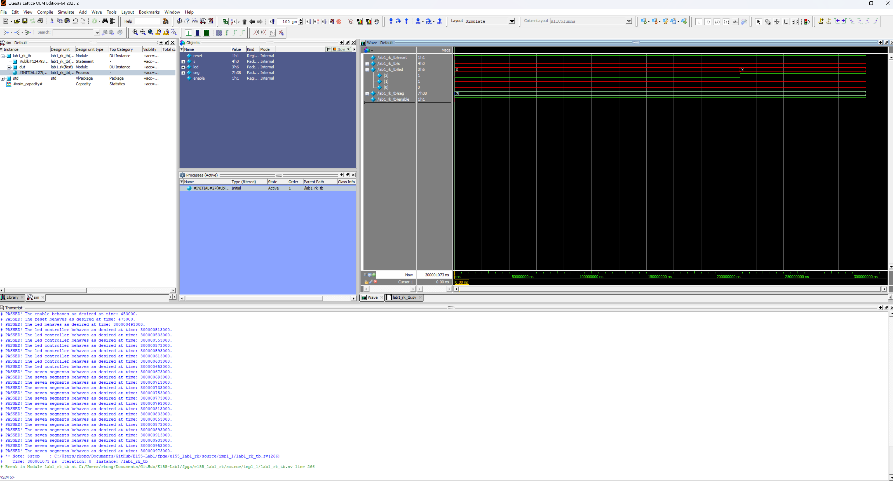
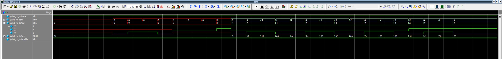
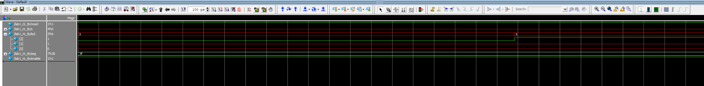
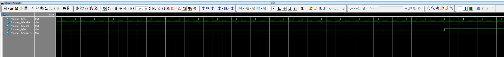
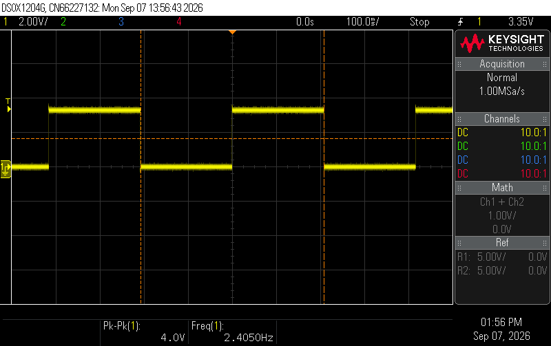
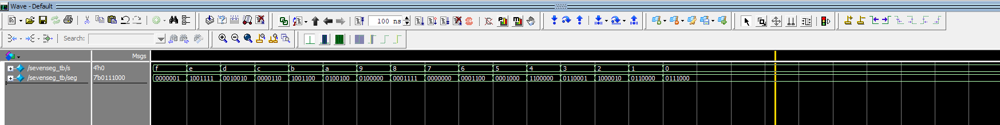

Lab 1 Report
Introduction
In this lab, a development board was built and programmed using SystemVerilog. This lab focused on using SystemVerilog to program the FPGA using switches, LEDs, and a seven-segment display. The goals were to test out the assembled development board, practice programming in SystemVerilog, and to gain experience in building, assembling, testing, and debugging circuits.
Design and Testing Methodology
Development Board Assembly
The development board was assembled according to the instructions provided in the lab manual as well as in reference to the E155 Development Board BOM. The board was then tested using the provided test programs.
FPGA Design
The FPGA was designed using three modules written in SystemVerilog: the top level module, the switch-to-seven-segment logic module, and the counter logic module.
The top level module was responsible for instantiating the other two modules and the switch-to-LED logic which was written using XOR and AND gates based on the truth tables.
The switch-to-seven-segment logic module was responsible for taking the input from the switches and outputting the corresponding signals to the seven-segment display. Combinational logic was used to implement each combination of the four switches to display the correct segment patterns
The counter logic module was responsible for using sequential logic to make an led blink at 2.4 Hz based on the 48 MHz internal HSOSC clock. The calculations used to divide the high frequency clock signal down to achieve the desired frequency are shown in Figure 1.

There was also an enable and reset input implemented into the code.
Testbench Design
Testbenches were created for each of the three modules to verify that the design was functioning as expected. The submodule testbenches used assertions to check that the output of each module matched the expected output for a given input with the 7-segment module covering all input-output pairs and the counter showing that reset, enable, and max count features all worked correctly. The top level module testbench was used to verify that the submodules were connected correctly, the HSOSC worked, and that the switch-to-LED logic was functioning as expected.
Hardware Testing
The 7-segment display circuit was built and assigned GPIO pins along with a current-limiting resistor which was calculated in Figure 2.

Technical Documentation
The source code for the project can be found in the associated GitHub repository.
Block Diagram

The block diagram in Figure 3 demonstrates the overall architecture of the design. The top-level module includes three submodules: the high-speed oscillator (HSOSC), the switch-to-seven-segment logic module, and the counter logic module. It also contains the switch-to-LED logic.
Schematic

Figure 4 shows the schematic of the physical circuit. The 7-segment display is connected to the labeled GPIO pins through a current-limiting resistor and powered through the FPGA 3.3V supply.
Results and Discussion
The design accomplished all of the design objectives.
Testbench Simulation
Figure 5 show the successful simulation results of the top-level module testbench.



Figure 8 shows the successful simulation results of the counter module testbench. The counter is checked by verifying that the output changes state at the correct time based on the maxcount and that the reset and enable inputs work as expected.


Figure 10 shows the successful simulation results of the switch-to-seven-segment module testbench. The module is checked by verifying that the output matches the expected output for all input-output pairs.

Conclusion
The design succesfully blinked an LED at 2.4 Hz, displayed the correct output on the 7-segment display based on the input from the switches, and displayed the correct output on the LEDs based on the input from the switches. I spent a total of around 30 hours working on this lab.
AI Prototype Summary
module top ( output logic led );
// iCE40 UltraPlus internal high-frequency oscillator.
// 24 MHz is one of the supported SB_HFOSC frequencies.
logic clk;
SB_HFOSC #(
.CLKHF_DIV("0b00") // 24 MHz
) hfosc (
.CLKHFPU(1'b1), // Power up oscillator
.CLKHFEN(1'b1), // Enable oscillator
.CLKHF(clk)
);
// 24 MHz / 12,000,000 = 2 Hz
// Toggle the LED every 0.5 s.
localparam int unsigned HALF_PERIOD = 12_000_000;
logic [$clog2(HALF_PERIOD)-1:0] counter;
always_ff @(posedge clk) begin
if (counter == HALF_PERIOD - 1) begin
counter <= '0;
led <= ~led;
end
else begin
counter <= counter + 1'b1;
end
endendmodule
module top ( output logic led );
logic clk;
// iCE40 UltraPlus internal high-speed oscillator.
// Radiant primitive: HSOSC
//
// CLKHF_DIV:
// 2'b00 = 48 MHz
// 2'b01 = 24 MHz
// 2'b10 = 12 MHz
// 2'b11 = 6 MHz
//
HSOSC #(
.CLKHF_DIV(2'b01)
) hfosc (
.CLKHFPU(1'b1),
.CLKHFEN(1'b1),
.CLKHF(clk)
);
// 24 MHz clock.
//
// Toggle every 6,000,000 clocks:
//
// 6,000,000 / 24,000,000 = 0.25 seconds
//
// Thus:
// LED ON = 0.25 s
// LED OFF = 0.25 s
// complete cycle = 0.5 s
// blink frequency = 2 Hz
//
localparam int unsigned HALF_PERIOD = 6_000_000;
localparam int unsigned COUNTER_WIDTH = $clog2(HALF_PERIOD);
logic [COUNTER_WIDTH-1:0] counter = '0;
always_ff @(posedge clk) begin
if (counter == HALF_PERIOD - 1) begin
counter <= '0;
led <= ~led;
end
else begin
counter <= counter + 1'b1;
end
endendmodule
The LLM-generated code is pretty good, with the general logic in how it approaches dividing the clock signal being very similar to what I did. However, the LLM-generated code had an error in its first attempt due to using the wrong internal osciallator of SB_HFOSC instead of HSOSC. After some prompting and providing greater context, the LLM was able to generate a correct version of the code that successfully synthesized. I do think its nice how throughly the LLM comments and explains the code and the calculations behind it. Therefore, given the user understands the task at hand and can provide sufficient context, the LLM can generate the code fairly succesfully and quickly.